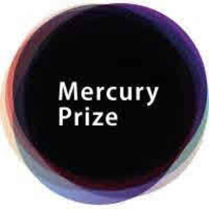
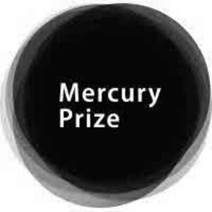

Trade Mark Journal No.2025/039 26 September 2025
UK00004261987 10 September 2025 (18,25,41)
Mark 1

Mark 2

- Class 18
- Clothing, belts, collars and leads for animals; whips; harness and saddlery; umbrellas; parasols; walking sticks; animal skins, hides; luggage; bags; shopping bags; tote bags; trunks; travelling bags; hand bags, shoulder bags, backpacks; rucksacks; bicycle bags, namely saddle bags; carrier bags; purses; wallets; bill folds; key cases; parts, fittings and accessories for all the aforesaid.
- Class 25
- Clothing; footwear; headwear; headgear.
- Class 41
- Entertainment; education; cultural activities; organisation and provision of musical and entertainment events, competitions, games, music prize awards and presentation ceremonies; production, recording and direction of sound and video recordings; television, film, audio and radio production and distribution; organisation, presentation, direction, recording, production and performance of shows and live performances, musical and entertainment events, competitions, music prize awards and presentation ceremonies; educational services; DJ services; publishing and publication services; providing non-downloadable recordings and other content; organisation of dance events and discos; record production; provision of musical entertainment; provision of information relating to entertainment and music; entertainment performance services; providing facilities for, arranging and conducting musical and entertainment events, competitions, music prize awards and presentation ceremonies; cultural events; live events; audio, visual and audio-visual entertainment services; audio-visual display presentation services for entertainment purposes; services for providing entertainment in the form of live musical performances and recorded music; entertainment services performed by a musical group, by musicians, by singers, by a musical vocal group or by vocalists; management of entertainment services; musical entertainment services; musical group entertainment services; booking of entertainment; ticketing and event booking services; organisation of competitions and award ceremonies; arranging of entertainment for advertising, business, commercial and trade purposes; reproduction of sound and images; information, consultancy and advisory services relating to all the aforesaid.
MERCURY PRIZE LIMITED
Representative: Beck Greener LLP